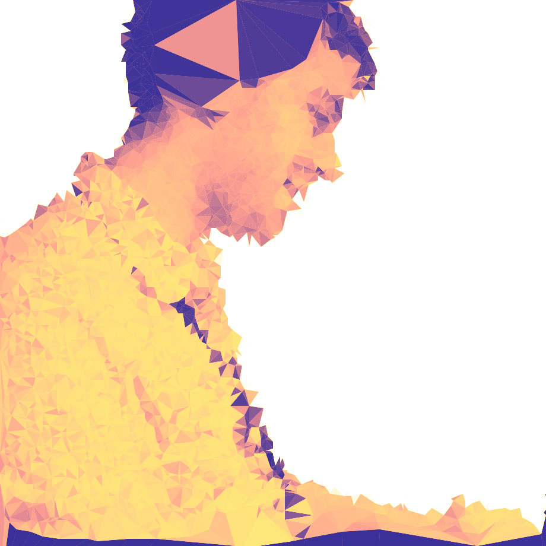
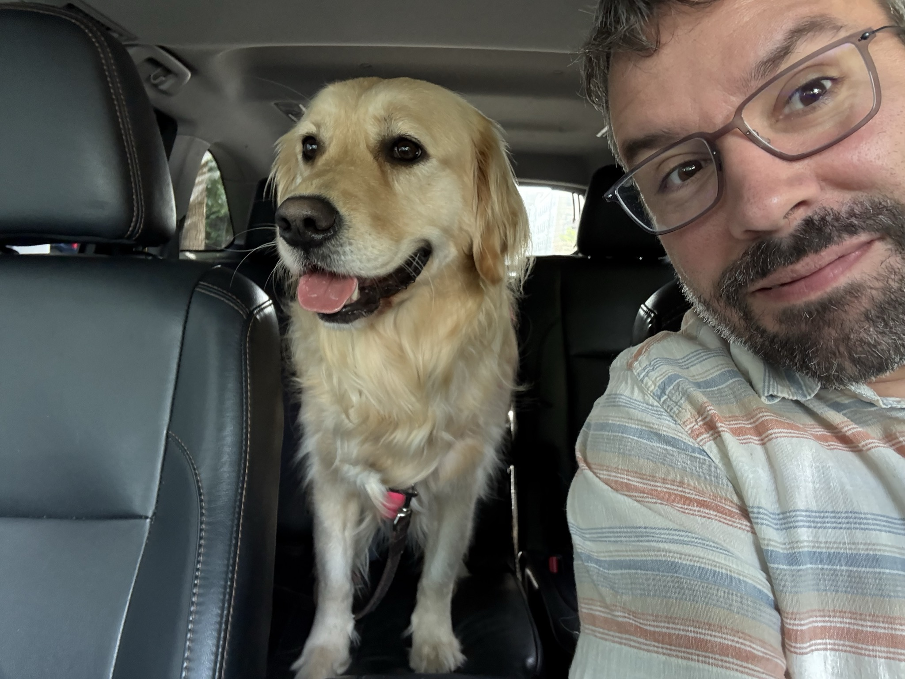

I'm Chris Dary, a Product-Focused Engineer and Engineering Leader (and Dad) who Likes Sci-Fi, web communities, reading, the open web, space, education, and indie gaming.
I'm interested in ideas and technology as tools for change, and I like to build software and lead others in being happy and productive in their engineering work.
I keep my hands in all sorts of web technology. I'm a technical generalist and enjoy all aspects of the stack and consider them primarily means to great products.
Lately I've also been interested in mental health,
voting systems, and civic technology.
This is me with my dog Sunny:

I want to make the world a kinder place. I try to be honest in all things.
Work
I'm currently building games with friends. Our first game is Parseword, a cryptic crossword game. The New Yorker wrote about it when we launched.
Previously, I was a Staff Engineer at reddit where I was Lead Engineer for the Community Engineering organization overseeing Moderation, Governance and Subreddit Experience (an org of about 40 engineers) and Lead Engineer for the Directed Share Program for reddit's IPO, CEO and Cofounder of Limbo, ran an office in Oakland for Mailchimp, and was an Engineering Director at reddit, where I led the web group, a set of five teams focused on reddit.com on the product side.
Prior to reddit, I worked at Etsy as Engineering Manager for Seller Economics and API Lead, was CTO of Readability, and was a partner and technical lead at now-acquired consulting firm Arc90.
Projects
- Parseword - A game I'm building with friends
- Limbo - Anonymously find your next ideal role
- Readability - Originally a browser extension to make reading on the web better, now the basis of the 'Reader Mode' functionality in most web browsers.
- Kindling (acquired) - Idea Collaboration Software